- Chapter 1 : Structure
- The body element is a required tag that contains all of the HTML document contents. The text of this content is what will show up on the actual page in a browser.
- I used this tag within my website on each page to display my content. I thought it was important to present this tag because without it, a web page would have nothing to dislpay.
- Chapter 2 : Text
- The paragraph tag separates pieces of text to add structure to a page.
- I used this tag in my website to section off certain portions of text on my pages. I presented this tag because (while it isn't necessary) it is one useful way to seperate content.
 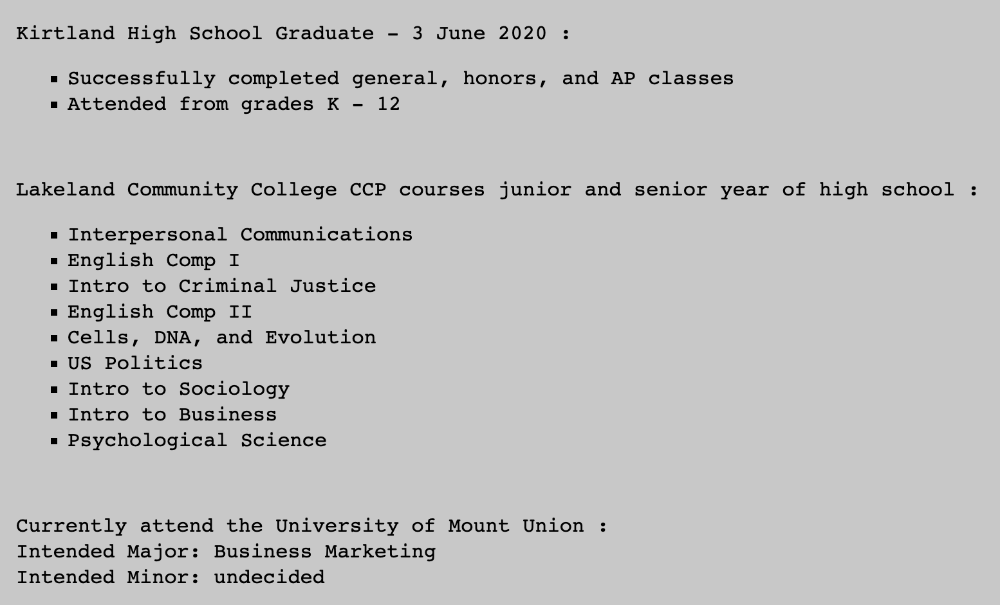
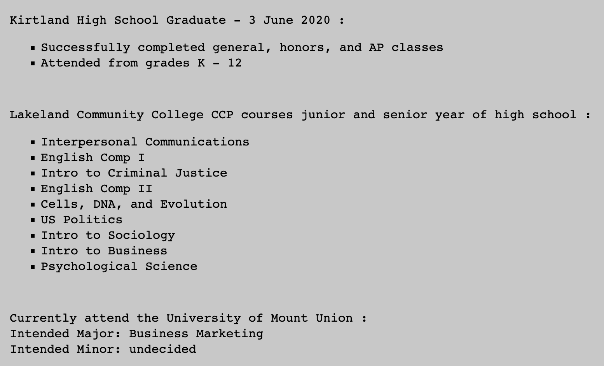
 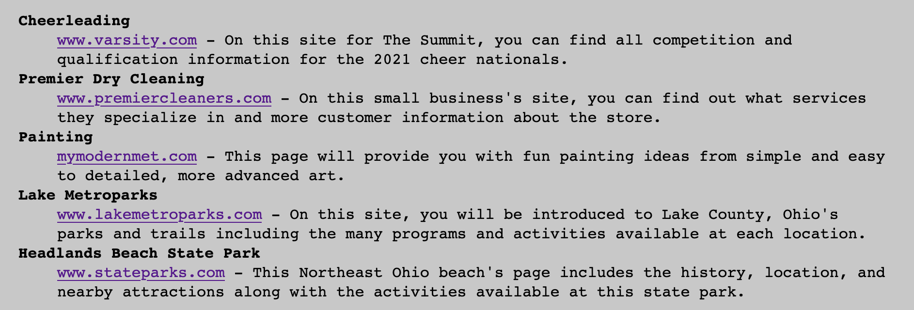
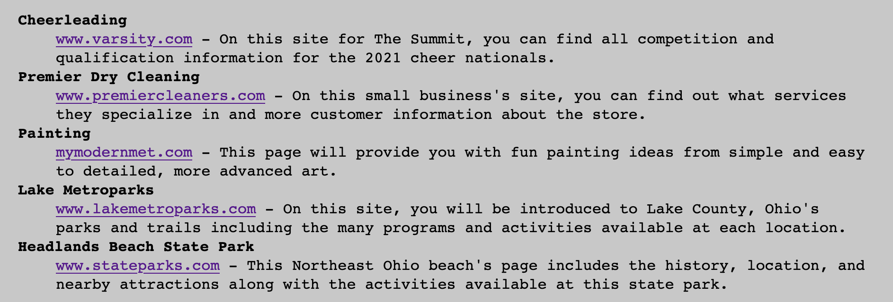
- Chapter 3 : Lists
- The definition list tag contains the tags for a term and its definition and is used to set up these as a list.
- This tag is used in my website on this page and my favorites page to list out subjects and their content. I selected this tag because it is useful when needing to present definitions or multiple subjects and their descriptions.
- Chapter 4 : Links
- The anchor tag including the href attribute with a relative link is used to link to pages within the same site.
- I used this tag for the navigation bars in order for users to easily get to other pages within my website. I am mentioning this tag and attribute because it is an easy and quick way to reach different pages without needing to have multiple links to open.
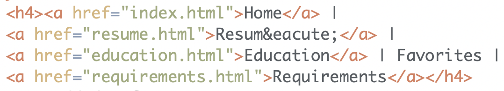

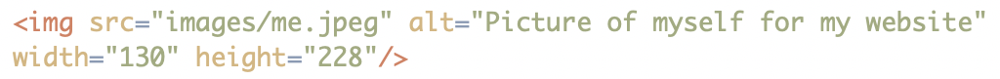

- Chapter 5 : Images
- The height and width attributes within an img tag are used to accurately size an image on a page.
- I used these attributes on the landing page for my website, applied to the image of me. These attributes are important because they set the size for how big or small an image is wished to be displayed on a page. Without accurately setting these attributes, images may turn out deformed.
- Chapter 6 : Tables
- The colspan and rowspan attributes within a th or td tag are used when a certian column or row needs to cover more than one cell in a table.
- I included a table in my website on my resumé page to display my skills. This attribute is important to correctly and accurately display data within a table.
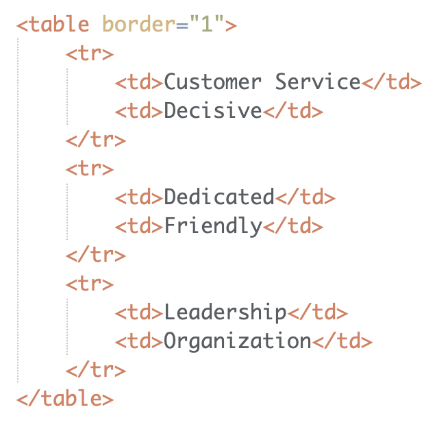


- Chapter 8 : Extra Markup
- Comments are primarily used for guidance, reminders, or messages in code for personal use or for anyone else viewing your code.
- I used comments throughout my code to notify myself of any edits that have been made to the previous submissions of my website. As you can see from the screen captures provided, comments do not show up on the actual web page in a browser. I chose this element because comments are a useful guidance tool and help keep code organized.
- Chapter 10 : Introducing CSS
- Internal CSS is used within the style tag to express the CSS rules that should be applied to certain elements of a web page.
- I used internal CSS in the code of each page of my site. Internal CSS is very useful when needing to apply multiple CSS rules to an element or a group of elements on that page. I selected this because keeping the styles of elements in one chunk within the embedded style tag makes it easier to view what styles have been applied to which elements.
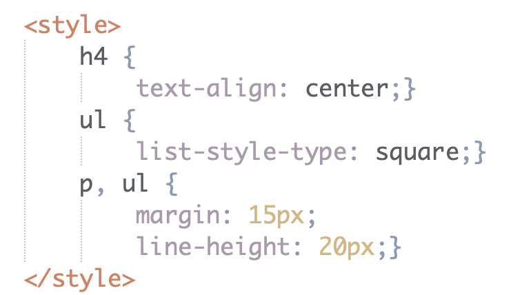 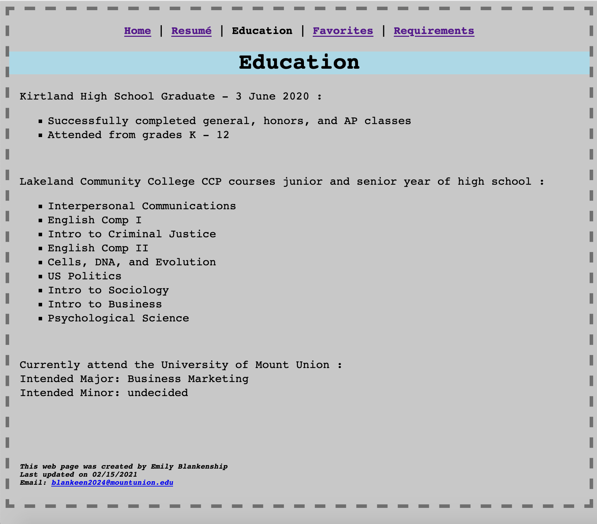
 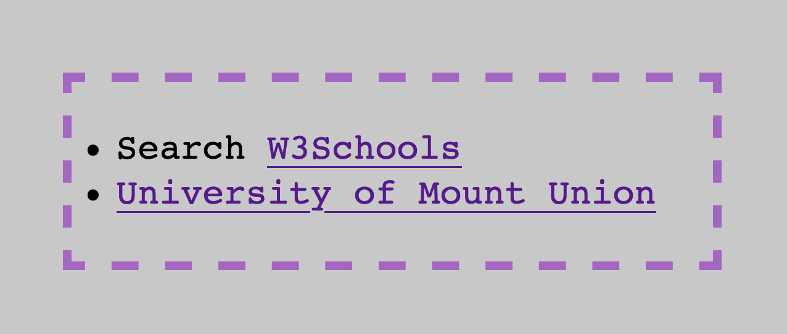
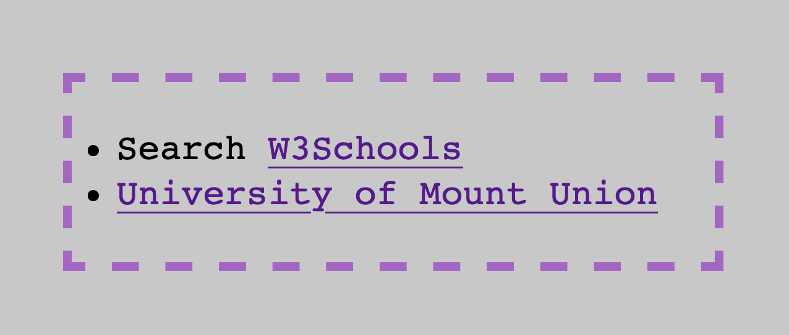
- Chapter 13 : Boxes
- The padding property when creating boxes is used to set the space around the text between the content and the border.
- I used this property for the border of the unordered list on my landing page of my website. I chose to mention this property because padding allows the content to be more or less separated from its border, allowing for more creativity of the box. This property could be applied to just the top, bottom, left, right, or all four sides.
- Chapter 14 : Lists, Tables, and Forms
- The list-style-type property is used to set the style of the bullet points of an unordered list.
- I used this property on the favorites page, identifying the list bullets as squares. I chose this property because changing the bullet type of an unordered list from the defult bullet point (disc) allows for more creativity when creating a web page.
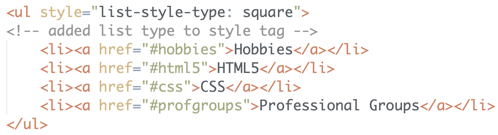 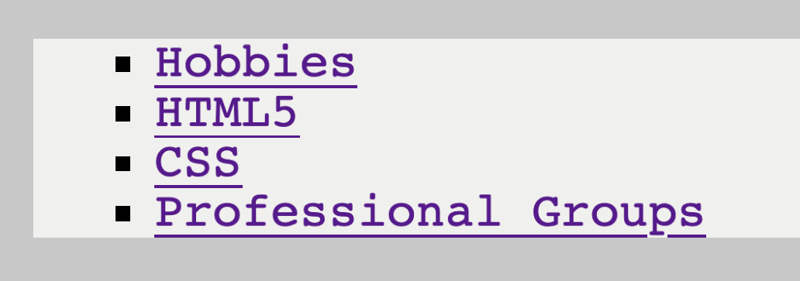
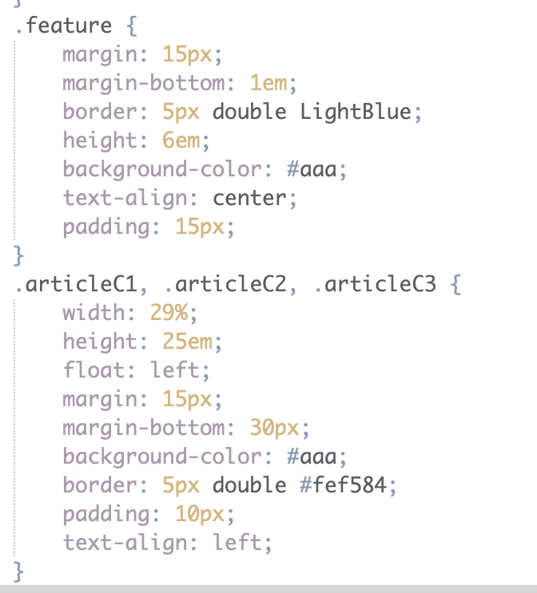

- Chapter 15 : Layout
- The margin property creates gaps above, below, or to the right or left of the content within that column.
- I used this property on the layout page of my website, setting margins for each of my 3 columns. I chose this property because it is very helpful when positioning columns next to eachother and spacing other content.
- Chapter 17 : HTML5 Layout
- The header and footer elements within an HTML5 layout sets certain content at the top and bottom of each page.
- Even though I applied CSS layouts to my website, I still included these elements since they are used for both CSS and HTML layouts. The header styles were applied to the embedded style sheets per page, and the footer styles were applied to the CSS external style sheet. I mentioned these elements because the header and footer typically include important information relating to each page or the whole site, usually kept consistent.

 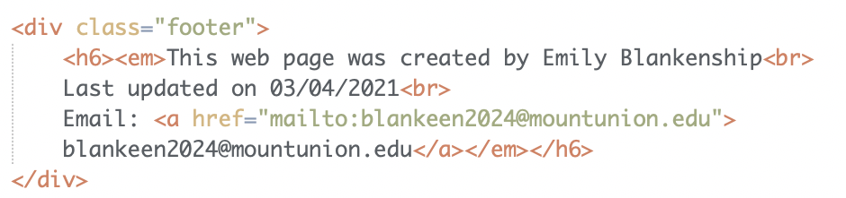
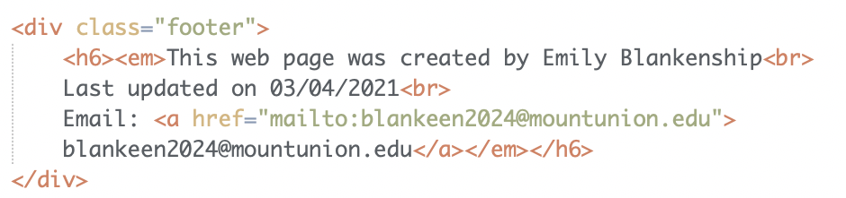